Journey 06 · Firenze Note 10 of 11 Field Note
The Weight of Tradition
Field notes from Florence on craft, history, and making something that can only exist once.
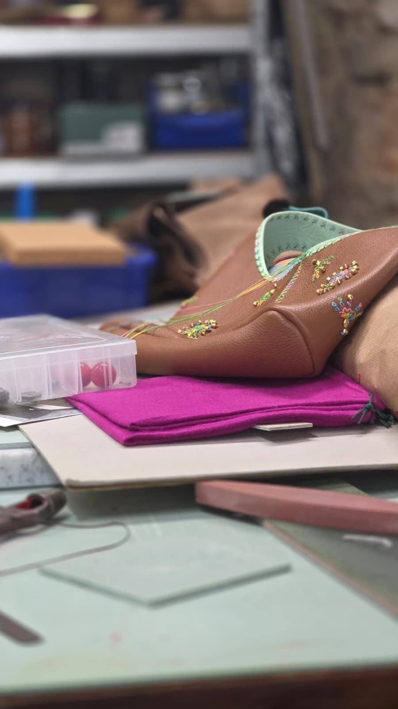
At the Florence leather school, I thought I knew what I was going to see.
Leather, obviously. Beautiful bags, skilled hands, maybe a few demonstrations. The familiar pleasure of watching someone make something difficult look easy.
And yes, all of that was there. There were tools, workbenches, shelves, colors, textures, finished pieces, unfinished pieces, and the smell of material being shaped into something that will last generations. The authority of the craft was everywhere: even stitches, clean edges, and the attention to the tiniest and most delicate details.
But our visit happened under a shadow, and the loss lingered along the edges and throughout the place where he most belonged.
A few days before we arrived, Tommaso Melani had died. He came from the Melani family of leather craftsmen behind Scuola del Cuoio, and had become one of the visible ambassadors of Italian craft and shoemaking through his work with Stefano Bemer. After Stefano Bemer’s founder died in 2012, Tommaso helped carry that legacy forward, preserving its standards while expanding the company, its school, its international reach, and its presence between Florence and New York.
This is what craft communities are: fragile networks of knowledge held by people. When a person like Tommaso dies, something irreplaceable goes with him. It cannot be downloaded or automated. It cannot be rushed into existence by someone with money and a good idea: It has to be learned slowly, from hands to hands, from one person to another.
I was thinking about is gained and lost when craft is an inheritance and not just technique when I saw Francesca Gori’s bags. What struck me was not the fine leatherwork, which was expected, but the way her bags seemed to carry that inheritance forward.
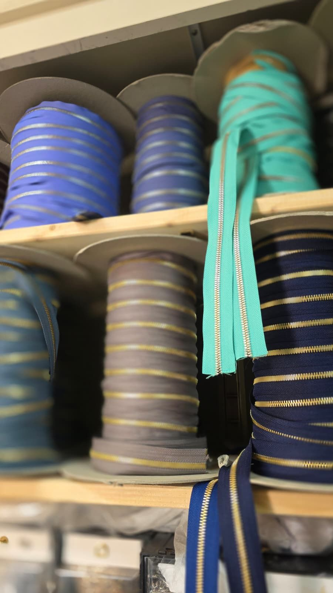
We did not get to meet her that day. Her absence was among the other absences that week. But her work was there.
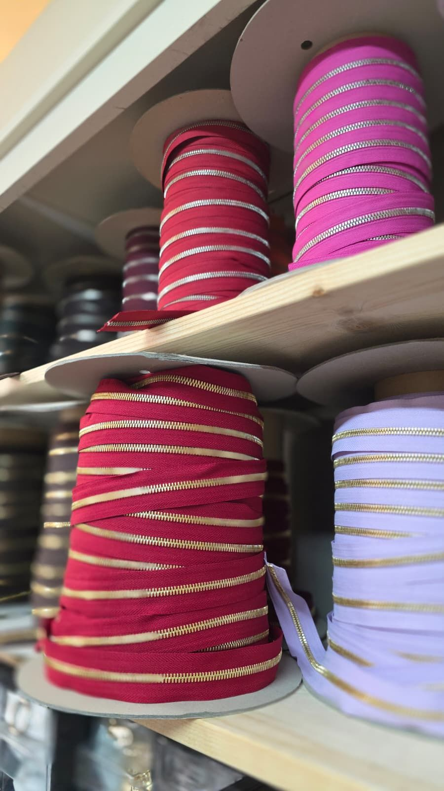
Francesca Gori’s collection began after her father died in 2004. With the support of her sisters, Barbara and Laura, she started making hand-stitched, one-of-a-kind handbags in his memory. The collection uses bright colors, jewels from around the world, antique embroidery traditions, unusual leathers, and objects found in unexpected places. Some pieces draw from old books of Italian embroidery. Some reinterpret the embroideries of grandmothers on ostrich, deer, and calf skins. Some begin with Chinese necklaces from the Miao ethnic group or with alligator and crocodile skins whose shapes help determine the design.
That is the part I loved, for both the expertise it requires and the story it creates.
She takes literal history and creates unique futures.
A necklace becomes a handle. An old embroidery pattern becomes part of a new surface. A jewel with one life is given another. A piece of leather is not forced into a standard shape if its own form suggests something else. The bags are not trying to look timeless by being neutral. They are alive with color, memory, experiment, and decision.
This is luxury presented in a different way than what I normally understand.
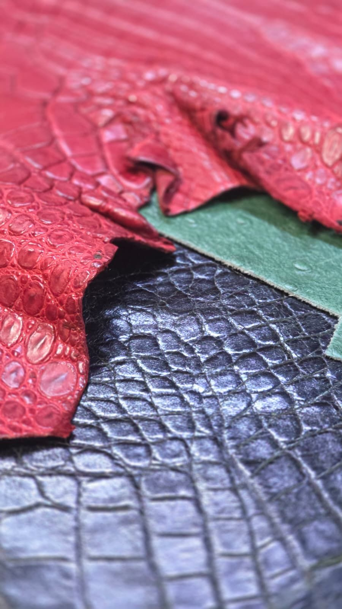
So much luxury is built around control: controlled palettes, controlled branding, controlled desirability, controlled scarcity. The logic is usually to make something exclusive, repeatable, profitable, and sellable to as many people as possible while maintaining the feeling that only a few people can have it.
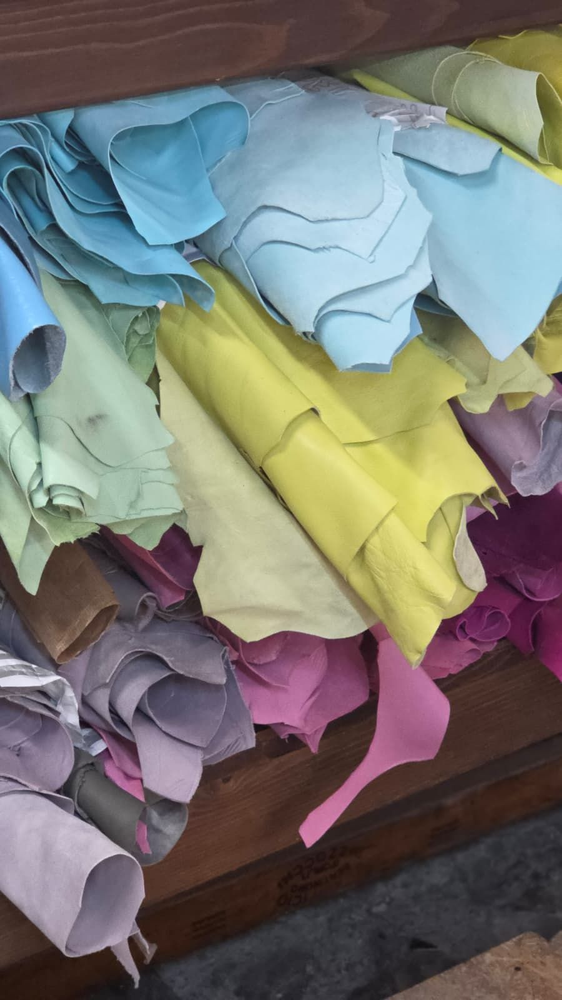
Francesca’s work has scarcity too, but it is not the cold scarcity of a limited drop or a logo made hard to obtain. It is the scarcity of something that can only happen once because the materials, the inspiration, and the moment will not repeat in exactly the same way.
Each bag is unique. Each one combines jewels, skins, and embroidery differently. Each one carries the trace of older creative rituals while becoming something new. Once made, the bag is named for its owner, captured into a binder of history, and its twin never to be made again.
That is not the same as making a product line. A product line wants repetition. It wants predictability. It wants inventory, scale, categories, bestseller logic, and a version that will go with everything. Francesca’s bags seem to resist that logic entirely. They are not asking to be useful in the blandest possible way but asking to be seen. They are asking to be chosen, not because they match everything, but because they matter to someone.
I was especially delighted by the detail that she will not make a plain black bag.
I understand the appeal of a plain black bag. I own things whose entire job is to disappear into an outfit and do their work unnoticed. There is nothing wrong with that. But as a creative refusal, I loved it. Someone has asked of course. Someone has wanted the name and the story, but only the safer, more practical version. The version that could be worn with everything and questioned by no one, but that no part of the soul of the creator.
But that is not what Francesca’s work is doing.
A plain black bag would flatten the whole point. It would take materials that arrived with history, color, texture, and personality and ask them to become anonymous.
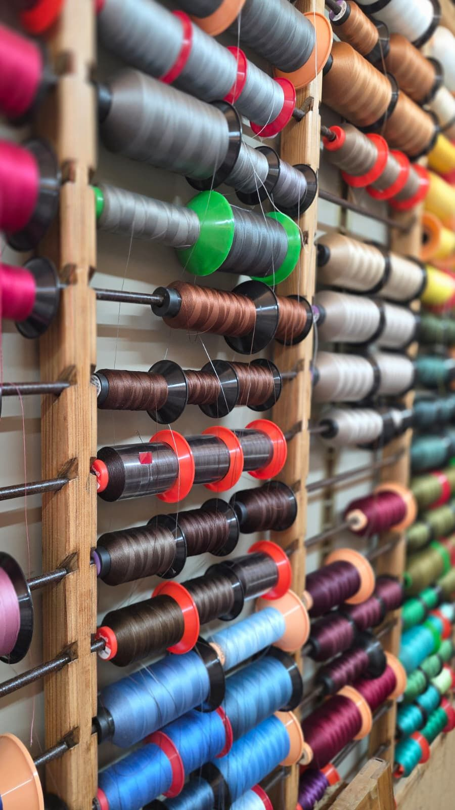
It would make the work more marketable. It would open new audiences. It would be smart business. But, Francesca’s work moves in the opposite direction. She begins with the material in front of her: its color, texture, shape, history, and limits. Old embroidery, unusual leather, inherited memory, found objects, and imagination meet there, without being forced into the safer version of a handbag. It refuses the logic of broader appeal in favor of the logic of integrity.
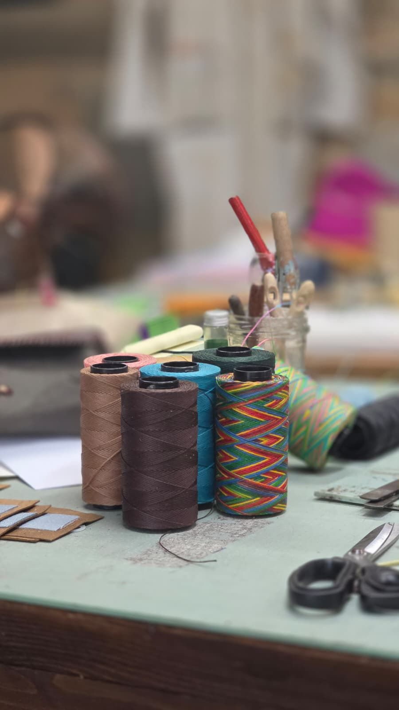
This is a philosophy of work: materials matter, standards matter, and change has to be earned before it is allowed into the tradition.
The same philosophy appeared when we heard about the school’s response to vegan leather. We were told the school had recently been offered several vegan leather material options. It was good quality and interesting. It could have opened them to new markets, appealed to a different audience, suggested innovation and sustainability.
But it required chemicals they do not use. It would need new techniques, new tools, new training.
It would require the school to test whether it lasts, whether it meets their standards, whether it can actually survive the way their leather survives. Unlike a large corporation with resources to absorb the risk, the leather school cannot afford to compromise its reputation or its craft on an experiment, no matter how well-intentioned.
The point was not that vegan leather is bad or that change is unwelcome. The point was that change, for them, has to be intentional and slow. It has to be tested against their values. It has to be worth the cost to their tradition and their standards.
That felt very Florence to me.
The city is full of beauty that refuses to reduce itself to usefulness, but it is also full of beauty made by systems of training, labor, family, money, apprenticeship, and stubborn human skill. Nothing beautiful appears from nowhere. Someone has to learn the technique. Someone has to choose the materials.
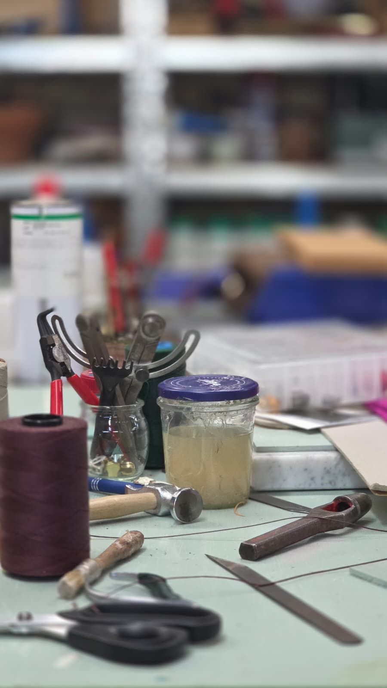
Someone has to protect the tradition while still making room for invention. Someone has to say no to what would be easier in order to say yes to what matters. At the leather school, those choices were not behind museum glass. They were on the tables, in the tools and materials, and in the standards people were working hard to keep alive.
In a museum, the finished object can feel almost untouchable. It sits behind glass or across a rope line, separated from the hands that made it. At the leather school, the distance was smaller. The materials were still close to their making. The tools still looked ready to be picked up, only momentarily set aside. The work belonged to living people, not only to history.
That is what craft can do when it stays alive. It doesn’t preserve the past by trapping it in place. It carries the past into new forms.
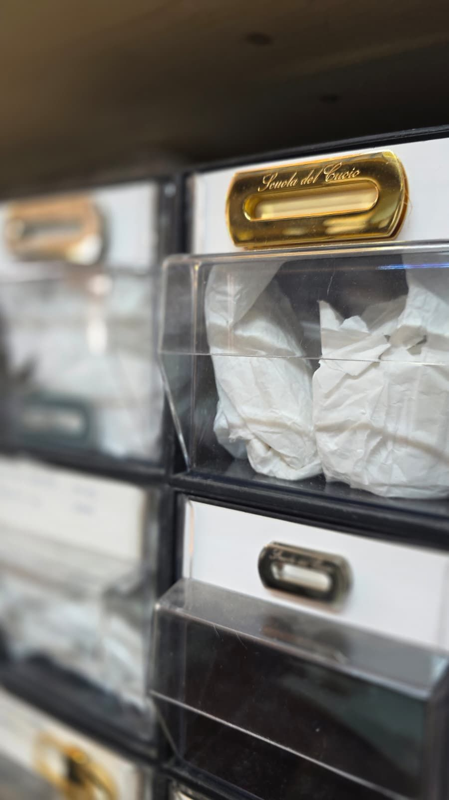
But it requires people willing to make that choice. People like Tommaso, who held knowledge and passed it forward. People like Barbara, Laura, and Francesca, who run a family business by choosing quality over growth, integrity over trend, and the long view over the quick profit over and over again.
From the outside, it can look romantic: family, craft, tradition, beautiful objects. Inside the work, it is more demanding than that. Someone has to decide what can change, what must be tested, and what would damage the thing they are trying to preserve.
I did not meet Francesca Gori, but I keep thinking about her bags because they offered a different way to understand tradition. Tradition was not repetition or nostalgia. It was not the safest possible version of what had already been done. It was the ability to know the materials, the history, and the craft deeply enough to make something new without pretending it came from nowhere, and without sacrificing what you know to be true to chase what a fickle market wants.
There is something generous in that kind of work. A forgotten jewel is not left behind. An old embroidery pattern is not treated as dead. A piece of leather is not reduced to inventory.
Memory becomes material.
Material becomes design.
Design becomes a future that could not have existed without what came before.
That may be why the plain black bag stayed with me, and why Francesca’s refusal mattered.
It was funny, yes. But it also made the whole philosophy legible. Some work is not meant to become more neutral, repeatable or more convenient to market.
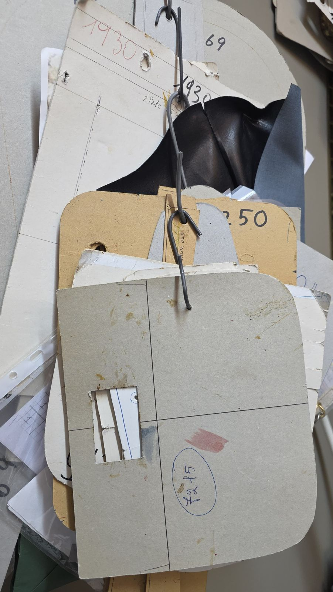
Some work is meant to honor the strange specificity of what it has been given. Francesca Gori’s bags take history seriously without embalming it. They let the past become vivid, impractical, colorful, and new.
In a world that keeps asking makers to simplify, repeat, and make the work easier to sell, that refusal feels like its own kind of courage.
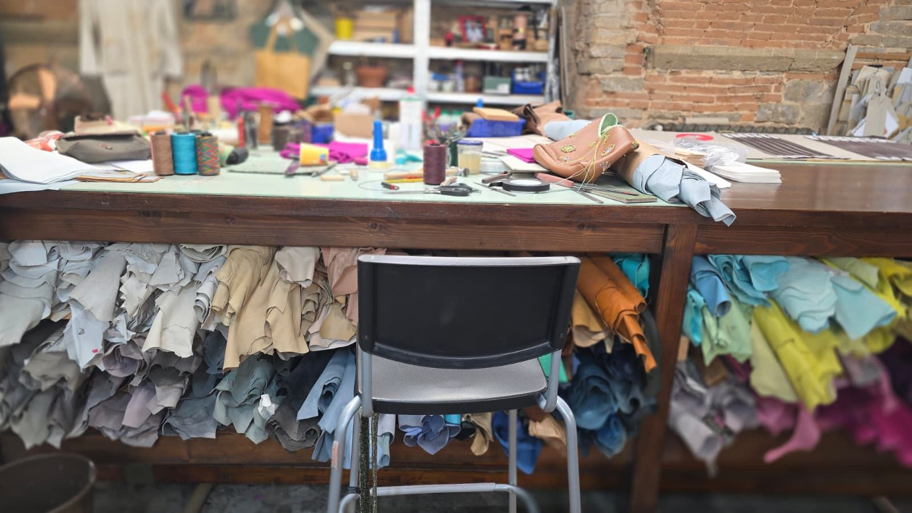
Mentioned in
Originally published at fieldnotesfromabroad.com/2026/05/27/the-weight-of-tradition/